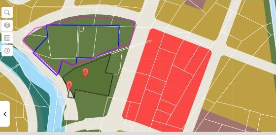
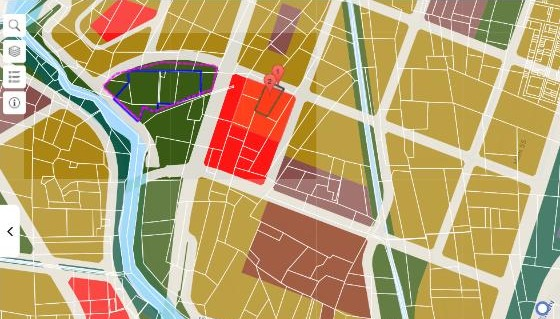
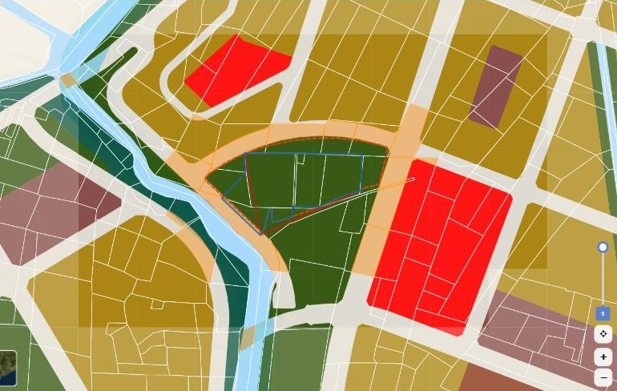

Thông Tin Cốt Lõi
Bộ phận Đầu tư trình Hội đồng quản trị và các nhà đầu tư thân hữu kế hoạch thực hiện dự án trường liên cấp trên khu đất tại phường Bình Tân. Tài liệu tập trung vào lộ trình pháp lý và tiến độ thực hiện. Tổng mức đầu tư và nguồn vốn được trình ở tài liệu riêng: Mô hình đầu tư giai đoạn xây dựng V1.
| Hạng mục | Nội dung |
|---|---|
| Tên dự án (tạm gọi) | Trường Liên cấp Tân Tạo (tên chính thức chọn sau; tránh các từ “quốc tế”, “quốc gia”, “Việt Nam” theo NĐ 360/2026) |
| Loại hình | Trường phổ thông có nhiều cấp học: Tiểu học – THCS – THPT; tư thục hoạt động không vì lợi nhuận |
| Chủ đầu tư | Pháp nhân dự án do các nhà đầu tư góp vốn thành lập |
| Vị trí | Bờ đông kênh Tham Lương – Bến Cát – Rạch Nước Lên, phía bắc Tỉnh lộ 10, giữa đường Võ Văn Vân và Võ Trần Chí; phường Bình Tân, TP.HCM (trước 07/2025: phường Tân Tạo, quận Bình Tân). Tọa độ tâm 10,7675°N – 106,5783°E |
| Diện tích | 17.356,5 m² theo sơ đồ giao – thuê đất (08/2026); lõi hiện trạng 11.617,1 m² (04/2026) |
| Quy mô định hướng | Chuẩn quốc tế, tham chiếu SSIS nhưng bố trí nén theo chiều cao cho phù hợp khu đất 1,7 ha: khoảng 1.050 học sinh, 48 lớp sĩ số khoảng 22; khoảng 18.700 m² sàn nổi, mật độ xây dựng khoảng 32%. Chốt sau khi xác định diện tích sử dụng thực |
| Khu nội trú | Dự kiến khoảng 100 giường, đầu tư giai đoạn 2; quy mô chốt cùng phương án kiến trúc. Khối nhà ngủ thuộc nhóm nguy hiểm cháy F1.1 (QCVN 06:2022/BXD) |
| Hiện trạng pháp lý đất | Đất nông nghiệp (lúa, ao, nuôi trồng thủy sản, mương thủy lợi); khoảng 10 chủ sử dụng; đất trống |
| Quy hoạch 1/2000 | Ô II.X1 – Đất công viên, cây xanh, thể dục thể thao; 99,5% ranh giao – thuê nằm trong ô này. Chưa cho phép xây trường. |
Kết luận then chốt. Khu đất hiện chưa được phép xây trường theo quy hoạch phân khu. Bước đầu tiên và quyết định của dự án là xin điều chỉnh quy hoạch 1/2000 chuyển phần đất dự án sang đất giáo dục. Chỉ sau đó mới xin chấp thuận chủ trương đầu tư. Kế hoạch dưới đây sắp xếp mọi việc khác theo mốc này.
Giáo dục là ngành ưu đãi đầu tư (Luật Đầu tư 2025, Đ.15). Nghị quyết 248/2025/QH15 yêu cầu ưu tiên quỹ đất cho giáo dục.
Nhận chuyển nhượng đất nông nghiệp thì được chấp thuận nhà đầu tư cùng lúc với chủ trương (Đ.23 k4b) và không phải ký quỹ (Đ.30 k1d).
Dự án chiếm khoảng 40% ô cây xanh 4,33 ha. Cần phương án bù cây xanh và luận cứ nhu cầu trường học đủ thuyết phục.
Hiện Trạng Khu Đất
Hồ sơ đo vẽ hiện có
Hai sơ đồ do Công ty TNHH Tư vấn – Thiết kế – Xây dựng – Đo đạc Phong Điền lập, hệ tọa độ VN-2000. Hiện trạng trên đất: đất trống.
| Bản vẽ | Ngày | Diện tích | Nội dung chính |
|---|---|---|---|
| Sơ đồ hiện trạng vị trí (bổ túc hồ sơ nhà đất), TL 1:500 | 18/04/2026 | 11.617,1 m² | 40 mốc góc ranh; tờ bản đồ số 2 (tài liệu 02/CT-UB, xã Tân Tạo, H. Bình Chánh) và tờ số 1 (BĐĐC phường Tân Tạo, Q. Bình Tân) |
| Sơ đồ vị trí nhà đất để lập thủ tục giao – thuê đất | 08/2026 | 17.356,5 m² | 33 mốc; bổ sung tờ số 196 phường Bình Tân (chỉnh lý 2025). Mục đích ghi: “Trình UBND TP.HCM và cấp GCNQSDĐ”. Mục “Phần thu hồi” còn để trống |
Sơ đồ ranh khu đất dựng lại theo tọa độ
Kiểm tra tọa độ ranh mốc
Mỗi mốc được kiểm bằng hai cách: tính lại diện tích từ tọa độ, và so khoảng cách giữa hai mốc liền nhau với cột “Cạnh (m)” ghi trên chính bản vẽ.
| Ranh | Kết quả kiểm tra | Đánh giá |
|---|---|---|
| Ranh hiện trạng, 40 mốc | Diện tích tính lại 11.617,6 m², lệch 0,5 m². 40/40 cạnh khớp bản vẽ, sai số lớn nhất khoảng 0,15 m (mốc 10–12, 21–23, do làm tròn khi in). | Tin cậy |
| Ranh giao – thuê, 33 mốc: cung phía bắc | Hai cạnh 3→4 và 4→5 cùng dài 101,78 m, nên mốc 4 là điểm giữa của một cung tròn. Tính ngược từ hình học cung được X4 ≈ 1.190.921,2, khớp cách đọc 1.190.921,17. Cung có bán kính khoảng 275 m. | Đã xác định |
| Ranh giao – thuê: các mốc đọc lại | Mốc 10 đọc lại thành (1.190.806,68; 590.337,88), trùng mốc 18 của ranh 40 mốc. Mốc 28 đọc lại Y = 590.391,98, khi đó hai cạnh kề khớp 19,44 m và 16,71 m. | Đã hiệu chỉnh |
| Ranh giao – thuê: còn tồn tại | Mốc 1, 6, 7: cạnh tính ra lệch với cạnh ghi trên bản vẽ từ 0,3 đến 1,4 m. Diện tích dựng lại khoảng 16.863 m², thiếu khoảng 490 m² so với 17.356,5 m². | Cần bản CAD gốc |
Cơ cấu thửa và loại đất
| Thửa (BĐĐC) | Loại đất | Diện tích (m²) |
|---|---|---|
| 62 | 2L – đất lúa | 4.120,4 |
| 65 (65-1 … 65-3) | 2L | 2.656,3 |
| 605 | NTS – nuôi trồng thủy sản | 2.233,1 |
| 64 (64-1, 64-2) | 2L | 2.196,0 |
| Mương | DTL – thủy lợi (đất công) | 163,8 |
| 63 | 2L | 120,2 |
| 42, 43, 44, 61, 66 | 2L – phần nhỏ thửa lân cận | 127,3 |
| Cộng ranh hiện trạng | 11.617,1 | |
- Toàn bộ là đất nông nghiệp. Phải chuyển mục đích sang đất xây dựng cơ sở giáo dục, nên dự án thuộc diện chấp thuận chủ trương đầu tư.
- Nhiều chủ sử dụng. Khoảng 10 hộ, cá nhân trên phần 17.356,5 m². Bốn thửa lớn 62, 65, 605, 64 chiếm khoảng 96% phần lõi.
- Có đất công đan xen. Mương thủy lợi 163,8 m² không nhận chuyển nhượng được; phải đề nghị Nhà nước cho thuê cùng dự án hoặc hoàn trả tuyến mương.
- Ranh giáp hạ tầng quy hoạch. Phía tây là ranh giải tỏa kênh, phía bắc là đường số 11 (lộ giới 20 m) dạng cung tròn, phía nam là mương.
- Hồ sơ đất đã chuẩn bị một phần. Cần xác minh ai đang đứng tên đề nghị giao – thuê trong hồ sơ 08/2026.
Theo tài liệu 02/CT-UB: thửa 37 (4.169,0), 41 (2.376,0), 92 (1.802,0), 93 (1.037,0) đất lúa; thửa 35 (1.293,5), 36 (939,6) đất ao. Tổng 11.617,1 m².
Quy Hoạch & Mức Độ Phù Hợp
Đồ án áp dụng là Quy hoạch phân khu tỷ lệ 1/2000 Khu dân cư Ngã tư Tân Tạo – Tây Bắc Tỉnh lộ 10 (Quyết định 4392/QĐ-UBND ngày 15/8/2013; điều chỉnh theo Quyết định 135/QĐ-UBND ngày 15/01/2015). Ranh tọa độ khu đất được chuyển sang hệ WGS84 và đối chiếu với dữ liệu ô chức năng của cổng Thông tin quy hoạch TP.HCM ngày 30/09/2026.


Đối chiếu ranh mốc với bản đồ quy hoạch
Dữ liệu hình học các ô chức năng được lấy trực tiếp từ cổng quy hoạch (73 mảnh ô giao với các thửa trong khu vực), sau đó tính phần diện tích của mỗi ranh nằm trong từng ô bằng lưới 1 m.
| Ranh | Trong ô II.X1 | Đất giao thông |
|---|---|---|
| 40 mốc (11.617 m²) | 11.334 m² · 97,6% | 280 m² |
| 33 mốc (≈16.863 m²) | 16.768 m² · 99,5% | 88 m² |
- Ranh giao – thuê bám đúng mép ô cây xanh. Cung phía bắc trùng mép trong của đường quy hoạch dạng vòng cung; phần lấn sang đường chỉ khoảng 88 m² trên chiều dài khoảng 200 m, tức lệch dưới 0,5 m. Tọa độ và phép chuyển đổi đạt độ chính xác đủ dùng.
- Ranh hiện trạng có 280 m² thuộc đất giao thông, nằm dọc cạnh tây nam (mốc 14–17), là dải đường ven kênh. Ranh giao – thuê đã cắt bỏ đúng phần này.
- Khu đất chiếm khoảng 39% ô II.X1 (16.768 / 43.300 m²). Phần còn lại của ô nằm phía nam mương và phía tây, vẫn giữ chức năng công viên.

| Ô | Chức năng | Diện tích ô | MĐXD | HSSDĐ | Tầng | Liên quan dự án |
|---|---|---|---|---|---|---|
| II.X1 | Công viên – cây xanh – TDTT | 43.300 m² | 5% | 0,1 | 1–2 | 99,5% ranh giao – thuê nằm trong ô. Thửa 62 (4.124,99 m²) và thửa 64 (2.259,62 m²) đều 100% thuộc II.X1. |
| II.C3 | Công trình công cộng | 10.000 m² | 40% | 2,0 | 3–5 | Liền kề phía đông, bên kia đường số 11. |
| II.N1 | Đất giáo dục xây mới | 40.000 m² | 45% | 1,6 | 3–4 | Cách khoảng 250 m về phía đông nam. Chỉ tiêu tham chiếu cho đề xuất và là phương án dự phòng. |
Chức năng là cây xanh. Mật độ 5% và hệ số 0,1 chỉ cho phép công trình phụ trợ công viên. Trường chuẩn quốc tế khoảng 1.050 học sinh, bố trí nén (bể bơi và nhà đa năng xếp chồng, sân thể thao trên mái) cần khoảng 18.700 m² sàn nổi, mật độ khoảng 32%, hệ số khoảng 1,1.
Đất giáo dục (gồm khu nội trú); mật độ tối đa 40–45%; hệ số 1,2–1,6, cân nhắc cao hơn nếu có ký túc xá; 3–5 tầng; tham chiếu ô II.N1 cùng đồ án. Lộ giới giáp khu: đường số 11 và số 8 rộng 20 m, đường số 1 rộng 30 m.
Kết quả tra cứu trên cổng quy hoạch chỉ có giá trị tham khảo. Bước đầu tiên của lộ trình là xin văn bản cung cấp thông tin quy hoạch chính thức cho ranh 17.356,5 m².
Hành Lang Pháp Lý 2021 – 2026
Kinh doanh giáo dục phổ thông là ngành nghề đầu tư kinh doanh có điều kiện (danh mục kèm Luật Đầu tư 2025, mục 116). Hầu hết văn bản trụ cột thay đổi trong giai đoạn 2024–2026, nên hồ sơ phải bám văn bản mới nhất. Nhãn Nguyên văn là nội dung đã đọc từ văn bản gốc; các nội dung còn lại được nêu Theo quy định hiện hành và sẽ được luật sư rà lại khi lập hồ sơ nộp.
Thay Nghị định 125/2024. Bỏ đề án thành lập riêng; trường thành lập phải phù hợp quy hoạch. Trường phổ thông tư thục có mức đầu tư tối thiểu tính theo số học sinh, chưa gồm tiền đất. Hạn chế đặt tên gây nhầm lẫn. Trường có cấp THPT thuộc thẩm quyền cấp tỉnh (Sở GD&ĐT).
Cơ sở giáo dục tư thục không vì lợi nhuận: nhà đầu tư cam kết không rút vốn, không hưởng lợi tức; lợi nhuận tích lũy dùng để phát triển trường. Hội đồng trường tổ chức bổ nhiệm cán bộ quản lý.
Đ.24 k8: dự án có đề nghị chuyển mục đích sử dụng đất thuộc diện chấp thuận chủ trương. Đ.25 k3a: Chủ tịch UBND cấp tỉnh chấp thuận. Đ.23 k4b: chấp thuận nhà đầu tư đồng thời khi nhận chuyển nhượng đất nông nghiệp. Đ.26 k2: nhà đầu tư trong nước không cần GCN đăng ký đầu tư. Đ.30 k1d: không phải ký quỹ. Đ.15 k1g: giáo dục là ngành ưu đãi. Trong thời gian chưa có nghị định hướng dẫn mới, tiếp tục áp dụng văn bản hướng dẫn hiện hành.
Ban hành 05/01/2026. Áp dụng cho điều chỉnh cục bộ quy hoạch trong phạm vi một phường, xã: UBND cấp xã tổ chức lập, thẩm định (khoảng 20 ngày), phê duyệt (khoảng 10 ngày), công bố (trong 15 ngày); phải có ý kiến bằng văn bản của Sở Quy hoạch – Kiến trúc trước khi thẩm định. Đây là quy định UBND TP ban hành theo khoản 3 Điều 48 Luật 47/2024.
Xác lập loại hình trường tư thục hoạt động không vì lợi nhuận; hỗ trợ học phí cho học sinh trường tư theo mức Nhà nước quy định.
UBND cấp tỉnh ưu tiên bố trí quỹ đất cho giáo dục và đơn giản hóa thủ tục chuyển mục đích sử dụng đất cho giáo dục. Là luận cứ chính sách cho đề xuất điều chỉnh quy hoạch; triển khai Nghị quyết 71-NQ/TW ngày 22/8/2025.
Đ.3 k2 điểm b: dự án thỏa thuận nhận quyền sử dụng đất đã hết thời hạn (kể cả gia hạn) mà thỏa thuận được trên 75% diện tích và trên 75% số người sử dụng đất thì HĐND cấp tỉnh xem xét, thông qua việc thu hồi phần còn lại để giao, cho thuê cho chủ đầu tư. Đ.4 k3: người có thẩm quyền cho phép chuyển mục đích đất trồng lúa sang mục đích khác mà không phải trình HĐND cấp tỉnh chấp thuận. Đ.4 k1: được giao, cho thuê đất theo tiến độ dự án.
Đ.41 k2c: quy hoạch phân khu thuộc đô thị loại đặc biệt do UBND cấp tỉnh phê duyệt. Đ.45 k5: được điều chỉnh khi thay đổi nhu cầu sử dụng đất dành cho hạ tầng xã hội theo chính sách từng thời kỳ, bảo đảm không quá tải hạ tầng. Đ.46 k2: điều chỉnh cục bộ tiến hành trên cơ sở kết quả rà soát quy hoạch, không làm thay đổi tính chất, chức năng, phạm vi ranh giới, giải pháp quy hoạch chính của khu vực; không phải lập nhiệm vụ quy hoạch. Đ.47 k2: trình tự lập hồ sơ – lấy ý kiến – thẩm định – phê duyệt – công bố. Đ.37: lấy ý kiến cơ quan trong 15 ngày; lấy ý kiến cộng đồng dân cư từ 20 đến 30 ngày. Đ.48 k3: quy hoạch do UBND TP phê duyệt nhưng do cấp dưới tổ chức lập thì cấp đó lập, thẩm định, phê duyệt điều chỉnh cục bộ theo trình tự UBND TP quy định. Đ.50: công bố trong 15 ngày.
Bỏ cấp quận. UBND phường Bình Tân là đầu mối địa bàn và lấy ý kiến cộng đồng; UBND TP phê duyệt quy hoạch phân khu và chấp thuận chủ trương. Sở Tài chính tiếp nhận hồ sơ đầu tư.
Thỏa thuận nhận quyền sử dụng đất để thực hiện dự án (Đ.127); điều kiện chuyển mục đích, cho thuê đất; tiền thuê đất và miễn, giảm cho lĩnh vực xã hội hóa; bồi thường khi thu hồi.
Từng thay NĐ 46/2017 và NĐ 135/2018; nay bị NĐ 360/2026 thay thế.
Luật Giáo dục 43/2019/QH14. TT 13/2020/TT-BGDĐT (tiêu chuẩn cơ sở vật chất trường phổ thông nhiều cấp học). TT 32/2020/TT-BGDĐT (điều lệ trường THCS, THPT, phổ thông nhiều cấp học). QCVN 01:2021/BXD. Luật Đấu thầu 22/2023/QH15 (không bắt buộc với vốn tư nhân).
Quy định áp dụng cho khu nội trú (ký túc xá)
Dự án dự kiến có khu nội trú cho học sinh. Khu này là công trình của cơ sở giáo dục, xây trên đất giáo dục, phục vụ riêng học sinh của trường. Các quy định chính:
| Lĩnh vực | Quy định | Yêu cầu đối với dự án |
|---|---|---|
| Phòng cháy chữa cháy | QCVN 06:2022/BXD, Bảng phân nhóm theo công năng Nguyên văn | Khối nhà ngủ của trường nội trú thuộc nhóm F1.1, cùng nhóm với nhà trẻ, bệnh viện; chặt hơn ký túc xá thông thường (F1.2). Không bố trí phòng ngủ ở tầng hầm, tầng nửa hầm; mỗi tầng có ít nhất 2 lối ra thoát nạn; phòng trên 15 người phải có 2 lối ra, cửa thoát rộng tối thiểu 1,2 m. Chiều rộng lối thoát tính theo số người lớn nhất trên tầng, gồm cả phòng ngủ. Thẩm định thiết kế PCCC theo Luật PCCC và CNCH 2024. |
| Cơ sở vật chất | TT 13/2020/TT-BGDĐT Theo quy định hiện hành | Trường có tổ chức nội trú bố trí thêm diện tích đất cho các hạng mục phục vụ nội trú (khoảng 6 m² cho mỗi học sinh nội trú) và phòng sinh hoạt chung gần khu ở. Phần này cộng thêm vào nhu cầu đất của trường, cần tính khi đề xuất chỉ tiêu quy hoạch. |
| Quy hoạch | Luật 47/2024, Đ.46 k2 Nguyên văn | Khu nội trú làm tăng số người lưu trú ban đêm. Hồ sơ điều chỉnh quy hoạch phải đánh giá để chứng minh không quá tải hạ tầng kỹ thuật và hạ tầng xã hội. Nên đề xuất ngay chỉ tiêu mật độ, tầng cao, hệ số sử dụng đất có tính cả khối nội trú. |
| Nhà ở, bất động sản | Luật Nhà ở 2023 Đ.76 k11; Luật Kinh doanh bất động sản 2023; Luật Đất đai 2024 Theo quy định hiện hành | Chính sách nhà ở xã hội cho học sinh chỉ áp dụng với trường dân tộc nội trú công lập và sinh viên đại học, cao đẳng, nên ký túc xá của trường tư thục phổ thông không hưởng ưu đãi nhà ở xã hội. Ký túc xá là tài sản của cơ sở giáo dục trên đất giáo dục: không bán, không tách riêng, không cho người ngoài trường thuê (việc cho thuê ra ngoài là kinh doanh bất động sản và sử dụng đất sai mục đích). |
| Cư trú | Luật Cư trú 2020; NĐ 154/2024/NĐ-CP Theo quy định hiện hành | Học sinh ở nội trú phải đăng ký tạm trú. Nhà trường lập danh sách và đăng ký tạm trú theo danh sách cho học sinh qua cổng dịch vụ công. |
| Dân số | Luật Dân số số 113/2025/QH15, hiệu lực 01/7/2026 Theo quy định hiện hành | Tập trung vào mức sinh, cân bằng giới tính, già hóa dân số; không đặt nghĩa vụ trực tiếp cho dự án. Số liệu dân số trong độ tuổi đi học của phường được dùng làm luận cứ nhu cầu trường học trong hồ sơ điều chỉnh quy hoạch. |
| Vận hành nội trú | Điều lệ trường (TT 32/2020/TT-BGDĐT); Luật Trẻ em 2016; Luật An toàn thực phẩm 2010 Theo quy định hiện hành | Quy chế nội trú, nhân sự quản lý và chăm sóc học sinh ngoài giờ, bảo vệ trẻ em; bếp ăn tập thể đáp ứng điều kiện an toàn thực phẩm. |
Lộ Trình Pháp Lý Tới Chấp Thuận Chủ Trương
Pháp luật đầu tư và đất đai buộc các thủ tục đi theo một chuỗi có điều kiện: bước sau chỉ nộp được khi bước trước đã có kết quả. Với khu đất này, chuỗi đó là pháp nhân → quy hoạch cho phép đất giáo dục → quyền sử dụng đất (thỏa thuận) → chấp thuận chủ trương đầu tư → chuyển mục đích, thuê đất. Mốc T1 là tháng 10/2026. Thời gian là ước tính của Bộ phận Đầu tư cho kịch bản cơ sở.
Trình tự và quan hệ phụ thuộc
Bước 5 bắt đầu song song từ T3 dưới dạng đặt cọc có điều kiện, nhưng chỉ ký chuyển nhượng chính thức sau khi có quyết định điều chỉnh quy hoạch (bước 4). Bước 6 cần đồng thời kết quả của bước 4 và bước 5. Hai ô viền đỏ là hai quyết định của UBND TP mà cả dự án phụ thuộc vào.
| # | Thủ tục | Điều kiện để nộp | Kết quả đầu ra | Cơ quan giải quyết | Căn cứ |
|---|---|---|---|---|---|
| 1 | Đăng ký doanh nghiệp pháp nhân dự án | Thỏa thuận thành viên, điều lệ | Giấy chứng nhận đăng ký doanh nghiệp | Sở Tài chính | Luật Doanh nghiệp; NĐ 360/2026 |
| 2 | Cung cấp thông tin quy hoạch; kiểm tra pháp lý thửa đất | Bản vẽ ranh, tọa độ; thông tin thửa | Văn bản thông tin quy hoạch; hồ sơ pháp lý từng thửa; diện tích sử dụng thực | Sở QH-KT; VP Đăng ký đất đai | Luật QH đô thị và nông thôn 2024; Luật Đất đai 2024 |
| 3 | Đề xuất chủ trương điều chỉnh quy hoạch phân khu | Kết quả bước 1, 2; báo cáo luận cứ; phương án bù cây xanh | Ý kiến chấp thuận chủ trương điều chỉnh; hình thức điều chỉnh | UBND phường (cơ quan tổ chức lập); Sở QH-KT; UBND TP nếu phải điều chỉnh tổng thể | Luật 47/2024 Đ.43, Đ.45 k5, Đ.46 k2; NQ 248/2025/QH15 |
| 4 | Lập, lấy ý kiến, thẩm định, phê duyệt điều chỉnh QH 1/2000 | Kết quả bước 3; báo cáo rà soát quy hoạch | Quyết định điều chỉnh cục bộ: khu đất thành đất giáo dục, có chỉ tiêu mới; công bố trong 15 ngày | Điều chỉnh cục bộ: UBND phường lập, thẩm định, phê duyệt, có ý kiến Sở QH-KT. Điều chỉnh tổng thể: UBND TP | Luật 47/2024 Đ.37, Đ.47 k2, Đ.48 k3, Đ.50; QĐ 01/2026/QĐ-UBND |
| 5 | Thỏa thuận nhận chuyển nhượng quyền sử dụng đất | Đặt cọc: từ T3. Chuyển nhượng: sau bước 4 và có văn bản chấp thuận cho tổ chức kinh tế nhận đất nông nghiệp | Hợp đồng chuyển nhượng; đăng ký biến động | UBND TP; VP Đăng ký đất đai | Luật Đất đai 2024 Đ.127; NĐ 102/2024; NQ 254/2025/QH15 |
| 6 | Chấp thuận chủ trương đầu tư, đồng thời chấp thuận nhà đầu tư | Kết quả bước 4 và 5 (hoặc hợp đồng thỏa thuận) | Quyết định chấp thuận chủ trương đầu tư | Sở Tài chính thẩm định; Chủ tịch UBND TP quyết định | Luật Đầu tư 2025 Đ.23 k4b, Đ.24 k8, Đ.25 k3a |
| 7 | Chuyển mục đích sử dụng đất, thuê đất, cấp GCN | Kết quả bước 6; quyền sử dụng đất đã đăng ký | Quyết định cho phép chuyển mục đích, cho thuê đất; hợp đồng thuê; GCN | Sở NN&MT; UBND TP (không phải trình HĐND TP đối với đất trồng lúa) | Luật Đất đai 2024; NĐ 102, 103/2024; NQ 254/2025/QH15 Đ.4 k3 |
Tiến độ chi tiết luồng pháp lý
Trục 24 tháng, từ 10/2026 (T1) đến 9/2028 (T24). Mỗi thủ tục con là một dòng. Dòng gạch sọc là việc dự phòng, chỉ làm khi cần.
| Hạng mục | 2026 | 2027 | 2028 | ||||||||||||||||||||||
|---|---|---|---|---|---|---|---|---|---|---|---|---|---|---|---|---|---|---|---|---|---|---|---|---|---|
| Công việc | Đầu mối | 10 | 11 | 12 | 1 | 2 | 3 | 4 | 5 | 6 | 7 | 8 | 9 | 10 | 11 | 12 | 1 | 2 | 3 | 4 | 5 | 6 | 7 | 8 | 9 |
| 1 · Pháp nhân | |||||||||||||||||||||||||
| Thỏa thuận thành viên, điều lệ, cam kết không vì lợi nhuận · T1 | Nhà đầu tư, luật sư | ||||||||||||||||||||||||
| Đăng ký doanh nghiệp · T2 | Sở Tài chính | ||||||||||||||||||||||||
| 2 · Thông tin quy hoạch & pháp lý đất | |||||||||||||||||||||||||
| Xin văn bản cung cấp thông tin quy hoạch · T1–T2 | Sở QH-KT | ||||||||||||||||||||||||
| Bàn giao CAD gốc, trích lục tờ 196, đo chỉnh lý · T1–T2 | Đo đạc, VPĐKĐĐ | ||||||||||||||||||||||||
| Kiểm tra pháp lý từng thửa, xác định đất công · T1–T3 | Luật sư | ||||||||||||||||||||||||
| 3 · Chủ trương điều chỉnh quy hoạch | |||||||||||||||||||||||||
| Báo cáo luận cứ, phương án bù cây xanh, ý tưởng QH · T2–T3 | Bộ phận ĐT, tư vấn | ||||||||||||||||||||||||
| Nộp đề xuất; làm việc UBND phường, Sở QH-KT · T3–T4 | Phường, Sở QH-KT | ||||||||||||||||||||||||
| UBND TP có ý kiến chủ trương điều chỉnh · T4 | UBND TP | ||||||||||||||||||||||||
| 4 · Điều chỉnh cục bộ quy hoạch phân khu 1/2000 | |||||||||||||||||||||||||
| Báo cáo rà soát quy hoạch; lập hồ sơ điều chỉnh cục bộ · T5–T6 | UBND phường, tư vấn QH | ||||||||||||||||||||||||
| Lấy ý kiến cơ quan (15 ngày) và cộng đồng (20–30 ngày) · T7–T8 | UBND phường | ||||||||||||||||||||||||
| Ý kiến Sở QH-KT; thẩm định hồ sơ (≈20 ngày) · T8–T9 | Sở QH-KT, phòng chuyên môn | ||||||||||||||||||||||||
| Phê duyệt (≈10 ngày), công bố (≤15 ngày) · T10 | UBND phường | ||||||||||||||||||||||||
| Cập nhật kế hoạch sử dụng đất hằng năm · T10–T12 | Sở NN&MT | ||||||||||||||||||||||||
| 5 · Quyền sử dụng đất | |||||||||||||||||||||||||
| Đàm phán, đặt cọc có điều kiện với chủ đất · T3–T6 | Bộ phận ĐT | ||||||||||||||||||||||||
| Văn bản cho phép TCKT nhận chuyển nhượng đất NN · T10–T12 | UBND TP | ||||||||||||||||||||||||
| Ký chuyển nhượng, công chứng, đăng ký biến động · T11–T13 | VPĐKĐĐ | ||||||||||||||||||||||||
| Dự phòng: đề nghị thu hồi phần còn lại (NQ 254) · T13–T17 | HĐND TP | ||||||||||||||||||||||||
| 6 · Chấp thuận chủ trương đầu tư | |||||||||||||||||||||||||
| Lập hồ sơ đề xuất dự án · T9–T11 | Bộ phận ĐT | ||||||||||||||||||||||||
| Nộp hồ sơ; lấy ý kiến sở ngành; thẩm định · T12–T14 | Sở Tài chính | ||||||||||||||||||||||||
| Quyết định chấp thuận chủ trương và nhà đầu tư · T14 | Chủ tịch UBND TP | ||||||||||||||||||||||||
| 7 · Sau chủ trương | |||||||||||||||||||||||||
| Chuyển mục đích (đất lúa không phải trình HĐND), cho thuê đất · T15–T18 | Sở NN&MT, UBND TP | ||||||||||||||||||||||||
| Xác định tiền thuê đất, ưu đãi; ký hợp đồng thuê · T17–T19 | Sở NN&MT, Thuế | ||||||||||||||||||||||||
| Cấp giấy chứng nhận quyền sử dụng đất · T20 | VPĐKĐĐ | ||||||||||||||||||||||||
| Hồ sơ cho phép thành lập trường · T20–T24 | Sở GD&ĐT | ||||||||||||||||||||||||
Diễn giải từng bước
- Công ty TNHH hai thành viên trở lên. Cân nhắc đăng ký doanh nghiệp xã hội để thể hiện cam kết tái đầu tư lợi nhuận.
- Thỏa thuận thành viên: tỷ lệ và tiến độ góp vốn, quyền biểu quyết (quyết định lớn cần ít nhất 75% vốn, thống nhất với NĐ 66/2026), cơ chế rút lui, thừa kế. Ghi cam kết không vì lợi nhuận vào điều lệ.
- Chuẩn bị hồ sơ năng lực tài chính của pháp nhân và thư cam kết tín dụng ngân hàng.
- Xin văn bản cung cấp thông tin quy hoạch cho ranh 17.356,5 m² kèm tọa độ.
- Kiểm tra từng thửa: giấy chứng nhận, người đứng tên, tranh chấp, thế chấp; đất lúa có thuộc vùng cần bảo vệ không. Xác minh người đứng tên hồ sơ giao – thuê 08/2026.
- Xác định phần đất công (mương, phần thu hồi), hành lang kênh, lộ giới đường số 11, từ đó ra diện tích sử dụng thực.
- Văn bản đề xuất gửi UBND phường Bình Tân và Sở Quy hoạch – Kiến trúc: chuyển phần ô II.X1 trong ranh dự án sang đất giáo dục.
- Báo cáo luận cứ: nhu cầu chỗ học của khu vực (dân số trong độ tuổi, mạng lưới trường hiện hữu so với chuẩn); NQ 71-NQ/TW và NQ 248/2025/QH15; đánh giá tác động giao thông giờ tan trường.
- Phương án bù cây xanh: giữ dải cây xanh ven kênh; tỷ lệ cây xanh cao trong khuôn viên; mở sân thể thao cho cộng đồng ngoài giờ học; phần còn lại của ô II.X1 (khoảng 2,6 ha) vẫn là công viên.
- Căn cứ đề xuất: Luật 47/2024 Đ.45 k5, thay đổi nhu cầu đất dành cho hạ tầng xã hội theo chính sách từng thời kỳ. Chuyển một phần đất công viên sang đất giáo dục là chuyển giữa hai loại hạ tầng xã hội, không làm thay đổi tính chất khu dân cư, nên có cơ sở để đề nghị làm theo hình thức điều chỉnh cục bộ (Đ.46 k2).
- Cơ quan tổ chức lập quy hoạch (UBND phường, kế thừa UBND quận Bình Tân cũ) lập báo cáo rà soát quy hoạch làm cơ sở điều chỉnh (Đ.43, Đ.46 k2). Cần xác nhận sớm với Sở Quy hoạch – Kiến trúc hai điểm: hình thức điều chỉnh là cục bộ hay tổng thể, và QĐ 01/2026/QĐ-UBND có áp dụng cho đồ án này không.
- Điều chỉnh cục bộ không phải lập nhiệm vụ quy hoạch. Cơ quan tổ chức lập tự lập hồ sơ hoặc chọn tư vấn (Đ.46 k2b); nhà đầu tư có thể đề nghị tài trợ kinh phí lập hồ sơ.
- Lấy ý kiến (Đ.37): các cơ quan trả lời trong 15 ngày; cộng đồng dân cư trong khu vực và khu vực chịu ảnh hưởng trực tiếp được lấy ý kiến từ 20 đến 30 ngày.
- Theo QĐ 01/2026/QĐ-UBND: có ý kiến bằng văn bản của Sở Quy hoạch – Kiến trúc; thẩm định khoảng 20 ngày; UBND phường phê duyệt khoảng 10 ngày; công bố trong 15 ngày (Đ.50). Nếu phải điều chỉnh tổng thể thì thẩm quyền phê duyệt là UBND TP (Đ.41 k2c) và phải lập nhiệm vụ quy hoạch.
- Cập nhật vào kế hoạch sử dụng đất hằng năm làm căn cứ chuyển mục đích và cho thuê đất.
- Ký hợp đồng đặt cọc có điều kiện: chỉ chuyển nhượng khi quy hoạch được điều chỉnh sang đất giáo dục. Ưu tiên 4 thửa lớn.
- Xin văn bản chấp thuận của UBND TP cho tổ chức kinh tế nhận chuyển nhượng đất nông nghiệp để thực hiện dự án (Luật Đất đai 2024, NĐ 102/2024).
- Nếu đạt trên 75% diện tích và trên 75% số chủ mà quá hạn: đề nghị HĐND TP cho thu hồi phần còn lại (NQ 254/2025/QH15).
- Phần đất công (mương, đất thu hồi): đề nghị Nhà nước cho thuê cùng dự án.
- Căn cứ: Luật Đầu tư 2025, Đ.24 k8, Đ.25 k3a, Đ.23 k4b. Nộp tại Sở Tài chính TP.HCM.
- Thành phần chính: văn bản đề nghị; giấy tờ pháp lý nhà đầu tư; tài liệu năng lực tài chính; đề xuất dự án (mục tiêu, quy mô, tiến độ, nhu cầu sử dụng đất, đánh giá tác động kinh tế – xã hội); hợp đồng hoặc tài liệu về quyền sử dụng đất; văn bản quy hoạch đã điều chỉnh. Rà lại theo nghị định hướng dẫn mới khi ban hành.
- Không ký quỹ (Đ.30 k1d); không cần GCN đăng ký đầu tư (Đ.26 k2).
- Sở Tài chính lấy ý kiến Sở GD&ĐT, Sở Nông nghiệp và Môi trường, Sở Xây dựng, Sở Quy hoạch – Kiến trúc, UBND phường; lập báo cáo thẩm định trình Chủ tịch UBND TP.
- Kịch bản chậm: T18 – T24, nếu điều chỉnh quy hoạch phải làm theo trình tự đầy đủ hoặc thỏa thuận đất kéo dài.
- Sau mốc: chuyển mục đích sử dụng đất, thuê đất (đề nghị áp dụng ưu đãi xã hội hóa giáo dục), cấp giấy chứng nhận, thủ tục xây dựng.
Các Luồng Phát Triển Song Song
Năm luồng công việc chạy cùng lúc với luồng pháp lý để không phải chờ giấy tờ xong mới bắt đầu. Nguyên tắc: việc chuẩn bị làm sớm, việc cam kết lớn chỉ làm sau mốc có điều kiện (ý kiến chủ trương điều chỉnh quy hoạch, quyết định chấp thuận chủ trương).
- T1–T6: định vị trường, chương trình GDPT 2018 và phần tăng cường, quy mô lớp theo cấp học, mô hình quản trị không vì lợi nhuận.
- T20–T24: quyết định cho phép thành lập trường (khi đã có đất hợp pháp phù hợp quy hoạch). Thẩm quyền: Sở GD&ĐT TP.HCM do trường có cấp THPT.
- T42–T45: cho phép hoạt động giáo dục khi cơ sở vật chất, thiết bị, đội ngũ, chương trình sẵn sàng. Hội đồng trường, quy chế tổ chức và quy chế tài chính thể hiện tính không vì lợi nhuận.
- T6–T10: tuyển chọn ý tưởng kiến trúc; dùng làm phụ lục hồ sơ điều chỉnh quy hoạch và đề xuất dự án.
- T14–T19: tổng mặt bằng, phương án kiến trúc, thiết kế cơ sở, báo cáo nghiên cứu khả thi theo TT 13/2020/TT-BGDĐT, TCVN 8793, TCVN 8794, QCVN 06. Khối nội trú tách riêng hoặc có khoang cháy riêng do thuộc nhóm F1.1.
- T18–T22: thẩm định thiết kế PCCC, thủ tục môi trường, giấy phép xây dựng.
- Vốn tư nhân không bắt buộc áp dụng Luật Đấu thầu; vẫn tổ chức chào thầu cạnh tranh có hồ sơ mời thầu.
- T16–T22: tư vấn quản lý dự án, tư vấn giám sát, tổng thầu thi công.
- T22–T35: thi công giai đoạn 1 (khối tiểu học, THCS, phần chung). T33–T44: giai đoạn 2 (khối THPT, nhà thi đấu).
- T18–T24: tuyển hiệu trưởng dự kiến, cùng hoàn thiện chương trình và công năng thiết kế.
- T30–T36: tổ chuyên môn nòng cốt. T38–T47: tuyển giáo viên và đào tạo 3–6 tháng trước khai giảng.
- T24 trở đi: thương hiệu và cộng đồng phụ huynh. T36–T47: tuyển sinh theo hướng dẫn của Sở GD&ĐT. Khai giảng 9/2030.
Tiến Độ Tổng Thể Sơ Bộ
Trục thời gian 48 tháng, từ tháng 10/2026 (T1) đến tháng 9/2030 (T48). Mỗi cột là một tháng. Hình thoi là mốc quyết định.
| Hạng mục | 2026 | 2027 | 2028 | 2029 | 2030 | ||||||||||||||||||||||||||||||||||||||||||||
|---|---|---|---|---|---|---|---|---|---|---|---|---|---|---|---|---|---|---|---|---|---|---|---|---|---|---|---|---|---|---|---|---|---|---|---|---|---|---|---|---|---|---|---|---|---|---|---|---|---|
| Công việc | Đầu mối | 10 | 11 | 12 | 1 | 2 | 3 | 4 | 5 | 6 | 7 | 8 | 9 | 10 | 11 | 12 | 1 | 2 | 3 | 4 | 5 | 6 | 7 | 8 | 9 | 10 | 11 | 12 | 1 | 2 | 3 | 4 | 5 | 6 | 7 | 8 | 9 | 10 | 11 | 12 | 1 | 2 | 3 | 4 | 5 | 6 | 7 | 8 | 9 |
| A · Pháp lý đất – đầu tư (đường găng) | |||||||||||||||||||||||||||||||||||||||||||||||||
| Thành lập pháp nhân dự án · T1–T2 | NĐT, luật sư | ||||||||||||||||||||||||||||||||||||||||||||||||
| Thẩm định đất, thông tin quy hoạch · T1–T3 | Bộ phận ĐT | ||||||||||||||||||||||||||||||||||||||||||||||||
| Đề xuất chủ trương điều chỉnh QH 1/2000 · T2–T4 | Sở QH-KT | ||||||||||||||||||||||||||||||||||||||||||||||||
| Ý kiến chủ trương điều chỉnh QH · T4 | UBND TP | ||||||||||||||||||||||||||||||||||||||||||||||||
| Lập, lấy ý kiến, phê duyệt điều chỉnh QH · T5–T10 | Tư vấn QH | ||||||||||||||||||||||||||||||||||||||||||||||||
| Thỏa thuận chủ đất (cọc có điều kiện) · T3–T12 | Bộ phận ĐT | ||||||||||||||||||||||||||||||||||||||||||||||||
| Hồ sơ chấp thuận chủ trương đầu tư · T10–T13 | Sở Tài chính | ||||||||||||||||||||||||||||||||||||||||||||||||
| Quyết định chấp thuận chủ trương · T14 | Chủ tịch UBND TP | ||||||||||||||||||||||||||||||||||||||||||||||||
| Chuyển mục đích, thuê đất, cấp GCN · T15–T20 | Sở NN&MT | ||||||||||||||||||||||||||||||||||||||||||||||||
| B · Mô hình trường & giấy phép giáo dục | |||||||||||||||||||||||||||||||||||||||||||||||||
| Định vị, chương trình, mô hình quản trị · T1–T6 | Tư vấn GD | ||||||||||||||||||||||||||||||||||||||||||||||||
| Quyết định cho phép thành lập trường · T20–T24 | Sở GD&ĐT | ||||||||||||||||||||||||||||||||||||||||||||||||
| Cho phép hoạt động giáo dục · T42–T45 | Sở GD&ĐT | ||||||||||||||||||||||||||||||||||||||||||||||||
| C · Thiết kế & cấp phép xây dựng | |||||||||||||||||||||||||||||||||||||||||||||||||
| Tuyển chọn ý tưởng kiến trúc · T6–T10 | Kiến trúc sư | ||||||||||||||||||||||||||||||||||||||||||||||||
| Tổng mặt bằng, TKCS, nghiên cứu khả thi · T14–T19 | Tư vấn TK | ||||||||||||||||||||||||||||||||||||||||||||||||
| Thẩm định PCCC, môi trường, GPXD · T18–T22 | Sở XD, PC07 | ||||||||||||||||||||||||||||||||||||||||||||||||
| D · Lựa chọn nhà thầu & thi công | |||||||||||||||||||||||||||||||||||||||||||||||||
| Tư vấn QLDA, tư vấn giám sát · T16–T20 | Chủ đầu tư | ||||||||||||||||||||||||||||||||||||||||||||||||
| Chào thầu, chọn tổng thầu · T19–T22 | Chủ đầu tư | ||||||||||||||||||||||||||||||||||||||||||||||||
| Thi công giai đoạn 1 (TH, THCS, khối chung) · T22–T35 | Tổng thầu | ||||||||||||||||||||||||||||||||||||||||||||||||
| Thi công giai đoạn 2 (THPT, nhà thi đấu) · T33–T44 | Tổng thầu | ||||||||||||||||||||||||||||||||||||||||||||||||
| E · Đội ngũ | |||||||||||||||||||||||||||||||||||||||||||||||||
| Tuyển hiệu trưởng dự kiến · T18–T24 | HĐ trường | ||||||||||||||||||||||||||||||||||||||||||||||||
| Tổ chuyên môn nòng cốt · T30–T36 | Hiệu trưởng | ||||||||||||||||||||||||||||||||||||||||||||||||
| Tuyển và đào tạo giáo viên · T38–T47 | Hiệu trưởng | ||||||||||||||||||||||||||||||||||||||||||||||||
| F · Tuyển sinh & vận hành | |||||||||||||||||||||||||||||||||||||||||||||||||
| Thương hiệu, cộng đồng phụ huynh · T24–T47 | Marketing | ||||||||||||||||||||||||||||||||||||||||||||||||
| Tuyển sinh năm học đầu · T36–T47 | Nhà trường | ||||||||||||||||||||||||||||||||||||||||||||||||
| Khai giảng năm học 2030 – 2031 · T48 | Nhà trường | ||||||||||||||||||||||||||||||||||||||||||||||||
Đọc tiến độ: đường găng nằm ở luồng pháp lý. Mỗi tháng chậm ở bước điều chỉnh quy hoạch đẩy lùi toàn bộ phía sau. Phương án khai giảng 9/2029 chỉ khả thi nếu UBND TP chấp thuận chủ trương điều chỉnh trước T4 và phê duyệt điều chỉnh trước T8.
Tổ Chức Thực Hiện & Hợp Tác
Dự án được triển khai bởi một pháp nhân dự án do các nhà đầu tư góp vốn. Mô hình không vì lợi nhuận có hệ quả trực tiếp tới quyền của nhà đầu tư, cần được thống nhất trước khi cam kết.
| Nội dung | Đề xuất của Bộ phận Đầu tư |
|---|---|
| Pháp nhân | Công ty TNHH hai thành viên trở lên; có thể đăng ký doanh nghiệp xã hội. Pháp nhân là chủ đầu tư dự án và là nhà đầu tư thành lập trường. |
| Cam kết không vì lợi nhuận | Không rút vốn, không chia lợi tức; lợi nhuận tích lũy dùng phát triển trường. Cần nhà đầu tư đại diện ít nhất 75% vốn góp cam kết. |
| Quản trị | Hội đồng thành viên của pháp nhân; Hội đồng trường của nhà trường. Quyết định lớn cần ít nhất 75% vốn. Cơ chế kế nhiệm, thừa kế phần vốn góp phải có trong điều lệ. |
| Phân vai đề xuất | Phân công đầu mối cho bốn mảng: pháp lý – đối ngoại; đất đai và thỏa thuận chủ đất; mô hình giáo dục và nhân sự; tài chính – kiểm soát. Bộ phận Đầu tư điều phối chung. |
| Đơn vị tư vấn cần thuê | Luật sư đầu tư – đất đai; tư vấn quy hoạch (hồ sơ điều chỉnh 1/2000); tư vấn giáo dục (mô hình, hồ sơ thành lập); đơn vị đo đạc (bàn giao CAD gốc). |
Cơ chế cam kết theo giai đoạn. Giai đoạn 1 (T1–T4) chỉ phát sinh chi phí chuẩn bị. Quyết định cam kết lớn (đặt cọc đất, thuê tư vấn lập quy hoạch) chỉ đưa ra sau khi có ý kiến chủ trương điều chỉnh quy hoạch của UBND TP. Nhờ vậy, rủi ro của nhà đầu tư được khoanh vùng ở mức thấp nhất trước điểm quyết định.
Rủi Ro & Phương Án Dự Phòng
| Rủi ro | Mức | Biện pháp và phương án dự phòng |
|---|---|---|
| UBND TP không chấp thuận điều chỉnh ô cây xanh | Cao | Chỉ đặt cọc có điều kiện cho tới khi có ý kiến chủ trương. Dự phòng: đề xuất tham gia xã hội hóa trên ô II.N1 (đất giáo dục xây mới, 4 ha, cách khoảng 250 m) hoặc tìm quỹ đất giáo dục khác. |
| Không thỏa thuận được hết chủ đất | Trung bình | Chốt trước 4 thửa lớn (khoảng 96% lõi). Dùng cơ chế trên 75% của NQ 254/2025/QH15. Tổng mặt bằng linh hoạt để loại trừ thửa nhỏ ở rìa. |
| Diện tích sử dụng thực bị thu hẹp | Trung bình | Hành lang kênh, lộ giới và mương thủy lợi giảm đất xây dựng. Chốt diện tích thực ở Bước 2 trước khi chốt quy mô học sinh. |
| Pháp luật đang chuyển tiếp | Trung bình | Nghị định hướng dẫn Luật Đầu tư 2025 chưa ban hành; NĐ 360/2026 vừa có hiệu lực. Luật sư rà thành phần hồ sơ ngay trước mỗi lần nộp. |
| Quản trị giữa các nhà đầu tư | Thấp – TB | Thống nhất bằng văn bản từ đầu: vốn góp là đóng góp dài hạn không rút, cơ chế ra quyết định, người kế nhiệm. |
Kiến Nghị Hội Đồng Quản Trị
Bộ phận Đầu tư kiến nghị HĐQT và các nhà đầu tư thân hữu thông qua giai đoạn chuẩn bị T1–T4 với các việc sau trong 30 ngày tới:
- Họp nhà đầu tư: chốt định vị trường, tỷ lệ góp vốn, người đại diện; ký biên bản ghi nhớ hợp tác.
- Nộp đơn xin văn bản cung cấp thông tin quy hoạch cho ranh 17.356,5 m² kèm bảng tọa độ VN-2000.
- Yêu cầu Công ty Đo đạc Phong Điền bàn giao bản vẽ CAD gốc thay cho bản scan.
- Thu thập giấy chứng nhận và thông tin pháp lý từng thửa; trích lục tờ bản đồ 196.
- Làm việc sơ bộ với UBND phường Bình Tân và Sở Quy hoạch – Kiến trúc về khả năng điều chỉnh ô II.X1.
- Thu thập số liệu dân số trong độ tuổi đi học và mạng lưới trường của phường làm luận cứ.
- Chọn luật sư đầu tư – đất đai và tư vấn quy hoạch.
Điểm quyết định tiếp theo của HĐQT: sau khi có ý kiến của UBND TP về chủ trương điều chỉnh quy hoạch (dự kiến T4), Bộ phận Đầu tư sẽ trình tài liệu tổng mức đầu tư, phương án tài chính và phương án huy động vốn để quyết định bước tiếp.
Nguồn tài liệu
- Bản scan hồ sơ đo vẽ khu đất (2 trang): sơ đồ hiện trạng vị trí 18/04/2026; sơ đồ vị trí để lập thủ tục giao – thuê đất 08/2026.
- Cổng Thông tin quy hoạch TP.HCM (thongtinquyhoach.hochiminhcity.gov.vn), tra cứu 30/09/2026: thửa 62, 64, 68 tờ 1; ô II.X1, II.C3, II.N1, II.C5.
- Luật Đầu tư 143/2025/QH15, văn bản gốc trên Cổng Thông tin điện tử Chính phủ.
- NĐ 360/2026/NĐ-CP, NĐ 66/2026/NĐ-CP, Luật Giáo dục sửa đổi 123/2025/QH15, NQ 248/2025/QH15, NQ 254/2025/QH15, NĐ 49/2026/NĐ-CP: tổng hợp từ Cổng Chính phủ, LuatVietnam và báo chí chính thống.
- QĐ 4392/QĐ-UBND ngày 15/8/2013 và QĐ 135/QĐ-UBND ngày 15/01/2015 của UBND TP.HCM.
- Chuyển tọa độ VN-2000 (kinh tuyến trục 105°45′, múi 3°) sang WGS84 theo 7 tham số chính thức; sai lệch dưới 1 m.